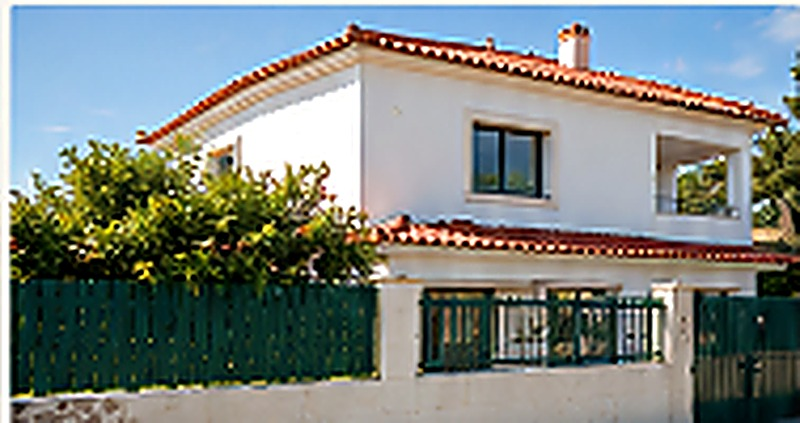

Construção
Fundações, estruturas e obras de nova construção.

Mais do que obras, entregamos espaços funcionais, modernos e feitos à medida das suas necessidades. Com qualidade, transparência e acompanhamento em todas as fases.
Da construção à remodelação, oferecemos serviços completos e personalizados, com foco na qualidade, no cumprimento de prazos e na satisfação de cada cliente.
Fundações, estruturas e obras de nova construção.

Reabilitação de edifícios, isolamento térmico e acabamentos de qualidade.

Cozinhas, casas de banho, pavimentos, pintura e muito mais.

Instalação elétrica, sanitária e acabamentos técnicos.

A Radu Construção & Remodelação é uma empresa com mais de 15 anos de experiência no setor da construção civil, especializada em obras de remodelação e reabilitação em Lisboa.
Trabalhamos com rigor, cumprindo prazos e orçamento, e com uma equipa qualificada que acompanha cada projeto do início ao fim.